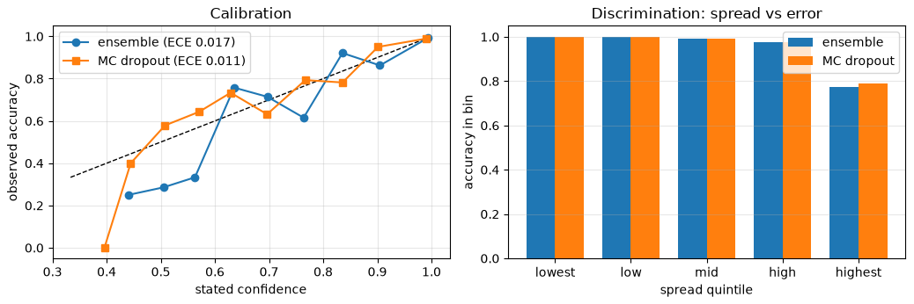
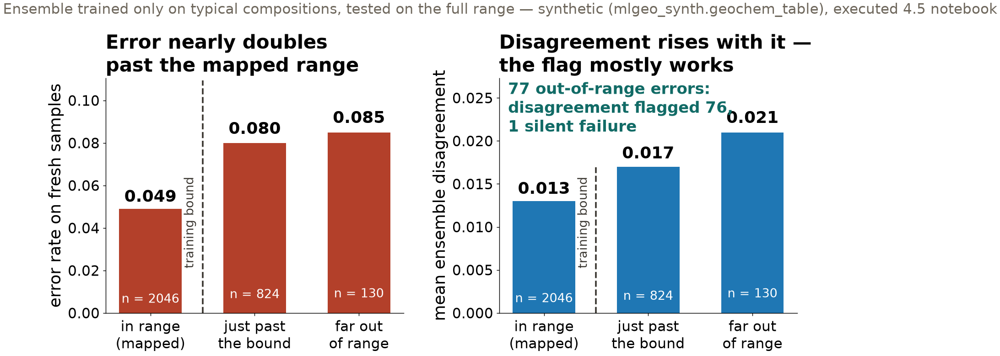

Session 25 · Mon Nov 30 · Book section 4.5 (§4–5)
🎲
Two ways to get an uncertainty estimate: five training runs, or one.
When your model says 80%, should anyone believe it — and did you check?
Resume at Wednesday’s checkpoint: 4.5 §4–5 · Ch 5 flipped reading assigned today (quiz closes Thu Dec 3)
✓ Deep ensembles: train the same network from several seeds; the disagreement is the uncertainty signal. Today’s expensive contestant.
Lakshminarayanan, B., Pritzel, A., & Blundell, C. (2017). Simple and scalable predictive uncertainty estimation using deep ensembles. NeurIPS 30.
✓ MC dropout: leave dropout on at prediction time and one trained model yields an uncertainty estimate. Today’s cheap contestant.
Gal, Y., & Ghahramani, Z. (2016). Dropout as a Bayesian approximation: Representing model uncertainty in deep learning. ICML.
✗ The audit nobody had run: modern networks state confidences far above their accuracy — miscalibration went unmeasured for years.
Guo, C., Pleiss, G., Sun, Y., & Weinberger, K. Q. (2017). On calibration of modern neural networks. ICML.
📖 The head-to-head under distribution shift: where the ensemble’s documented advantage actually lives — and why our small-MLP verdict differs.
Ovadia, Y., et al. (2019). Can you trust your model’s uncertainty? Evaluating predictive uncertainty under dataset shift. NeurIPS 32.
Both methods are canon. Which one your project needs is a measurement, not a doctrine — today you make it.
| test accuracy | ECE | models trained | |
|---|---|---|---|
| Deep ensemble (5 members) | 0.949 | 0.017 | 5 |
| MC dropout (T = 50 passes) | 0.952 | 0.011 | 1 |
ECE, expected calibration error: the average gap between stated confidence and observed accuracy. The 50 dropout passes are the cheap side; training runs are the expensive one.
On this task, the single dropout model matched the 5-member ensemble at a fifth of the training cost. The numbers refuse to crown the expensive method.

An earlier draft of the book claimed the ensemble improves calibration. The measurement said no — on this task there was nothing to fix. “Well calibrated” is a number you attach after running the cell. Synthetic lithology table (mlgeo_synth).

Disagreement flagged 76 of the 77 extrapolation errors. The one silent failure is today’s discussion: its features drifted into a neighboring class’s familiar territory, so all five members confidently agreed — on the wrong label.
The range statement belongs next to the model, in writing — it cannot be inferred from the model’s behavior.
Wed: forecasting shootout (4.10), leaderboard opens · Ch 5 quiz closes Thu Dec 3 · HW-DL due Fri Dec 4
ESS 469/569 · Machine Learning in the Geosciences · Autumn 2026